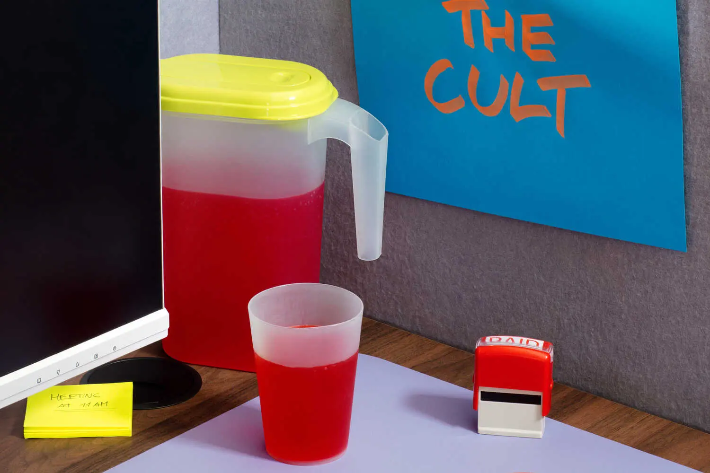

The Ezra Klein Show
NEW FEATURE · CULTURE & TECHNOLOGY · LOCAL EDITORIAL DEMO
Could “Human Error” Become the Biggest Anti-AI Movement Yet?
A new anti-AI philosophy asks people to embrace the mistakes that make them human. But can its message become a wider movement?
New York Times - Top Stories
These top stories are free to read.
Ahead of what could be the largest ever initial public offering, the company painted a nuanced picture: Despite risks, A.I. could bring untold benefits.
Supporters and opponents of Prime Minister Benjamin Netanyahu have expressed anxieties about security at home and the future of Israel’s identity.
President Luiz Inácio Lula da Silva’s re-election victory prompted a sharp reversal in financial markets that had expected his opponent to win.
Maps show where Brazil’s progressive president surged ahead to win re-election.
Scientists now know that they shared many of the sophisticated abilities of Homo sapiens. The question is why we are the only humans left standing.
Analysis
In much of Europe, the right’s advance has been seen as unstoppable. But in the east, nationalists are being cast aside in places they’ve long governed.
Norwegian officials emphasized that their government has no influence over who receives the Peace Prize after President Trump expressed his frustration.
Mr. Paxton, the Republican candidate for Senate in Texas, has taken about 350 trips outside of the state since he was sworn in as attorney general.
Election Dispatches
See more updates
The Great Read
Mayer, who made her name as a pioneer at Google, is entering the crowded marketplace for A.I. assistants — and hoping to draw in more women.
As the baby-faced Russian navigator of the U.S.S. Enterprise, he was a mainstay of the original television series and seven films. He was 90.

A video of Catholic leaders praying with the president was shared by the White House. One archbishop said it was done without permission.
Shiny Glass Skyscrapers Are a Hot Thing. Literally.They’re transforming cities with million-dollar views. But climate change makes cooling them tricky and costly.
Ulet Ifansasti for The New York Times
LIVE
The world’s best players, coaches and teams will be honoured at a star-studded ceremony in London.
Is the male love interest the answer to toxic masculinity? The actors contemplate that prospect and the challenges of creating a very adult fable.

Plus: Reader responses to a woman returning to the office after two decades of self-employment.
Most Shared
Advertisement
SKIP ADVERTISEMENTWatch Today’s Videos
More News
Marci Webber was institutionalized after being acquitted by reason of insanity for killing her child. For years she has said she should be freed.

750,000 people across the U.S. practice the sport. Practitioners think of it as “learning a new language.”
Most of the ads we’re seeing over and over again are predatory enough to make you feel sticky, a columnist for The Athletic writes.
Goalie Devin Cooley’s postgame comments pulled back the curtain for a peek into how an elite athlete thinks.
Advertisement
SKIP ADVERTISEMENTLatest Shows
Latest Shows
Pablo Torre Finds Out
The Opinions
The Wirecutter Show
Advertisement
SKIP ADVERTISEMENTCulture and Lifestyle

Movie Review
A man woven from branches disrupts a village’s customs in this wonderfully raunchy satire.
A record percentage of U.S. property transfers last year were through inheritance, but taking over a home with sentimental value can be fraught.
Buyers can find country villas and farmhouses for sale in Italy’s “green heart.”
Here’s what one Wirecutter editor learned after six months tracking her sleep, nutrition, body composition and more.
It also works on dingy appliances, grimy hubcaps and weird clothing stains.
Language-learning apps can get you started. But these other methods can help nudge you towards fluency.
Here’s how one Wirecutter editor rescued his daughter’s account.
Games
Daily puzzles
Games
Daily puzzlesGuess the 5-letter word with 6 chances.
Group words that share a common thread.
How many words can you make with 7 letters?
Solve this bite-sized puzzle in just a few minutes.

Can you solve this perfect-size puzzle?

Get clued in with wordplay, every day.

Advertisement
SKIP ADVERTISEMENT